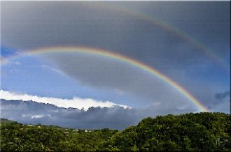
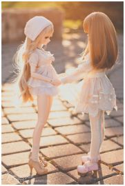
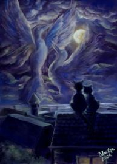
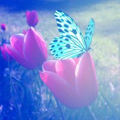
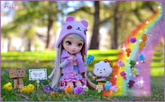

Сорвётся листок календарный,Куранты двенадцать пробьют.Шары, серпантин и гирлянды,И в небе - волшебный салют.

Подруга милая, пусть радиоволнаТебя зовет с собой в «Прекрасное Далёко»!Всю свою нежность и признательность должна
Снегом белым запорошен,Сказкой зимней заворожен,Бор сосновый, словно диво!Здесь игрива и красива,Широка и глубока,
Dans un pays de tous les tempsVit la plus belle des abeillesQue l'on ait vu depuis longtempsS'envoler à travers le ciel
Дурсаад сэтгэл дэнсэлдэгДуулаад ирдэг дээ найз миньДуниартсан их говийгТуулаад ирдэг дээ найз минь

Солнце в небе сияет заревом,Дует с моря ласковый бриз.Хороший день начать все заново,Давай нарисуем новую жизнь.

Vai passarNessa avenida um samba popularCada paralelepípedoDa velha cidadeEssa noite vaiSe arrepiarAo lembrar

Había una vez un cuento hace mucho tiempo atrás,hace tantos años que no me alcanzan los dedos para contar.
Как же глупо, как же странноОсень к нам пришла нежданно.Так наивно нам казалось,Что лето вечно продолжалось.Так вести себя без лести.
Скоро вечный самолёт,Набирая ход,Тебя увезёт.И сомнений теплоходВ помутненье водУносит, и вот...Нет, не смотри назад
I won't let you downWon't let you down againI won't let you downWon't let you down againI won't let you downWon't let you down again
I wouldn't wanna be anybody elseHey[Verse 1]You made me insecure,Told me I wasn’t good enough.But who are you to judge
Вечер нам зажигает витрины,Сказочный мир из окна лимузина.Манит огнями жизни крисивой миф...Мимо мелькают случайные лица,
Я иду, а звёзды катятся.Сколько дней из жизни тратится,Чтобы делать то, что не нравится,Даже не представить!
Сегодня Кэти Перри не во сне - по телефону предложила мнепрогулку после вкусного глясепо улочкам старинным Туапсе.
Как-то летом в ТуапсеСобрались актёры все.На везение моёСреди них – и Депардьё.Был Жерар со мною мил,На прогулку пригласил.
Наша встреча повторилась, и вновь Говорили, как же сладка любовь,Что не нужно понимать в ней слова иногда!Если любишь, ни о чём не жалей,

В Новый Год все немного артисты –Наряжаемся, шутим, поем!..В эту ночь даже строгий министрВозле елки с бенгальским огнем!
Ты понять меня всё пытаешьсяИ найти во мне что-то главноеА когда опять ошибаешьсяГоворишь что я очень странная.
Руководитель наш, Вы «классный» во всех смыслах!Осенний праздник – День учителя настал!И на уроках только радостные мысли,